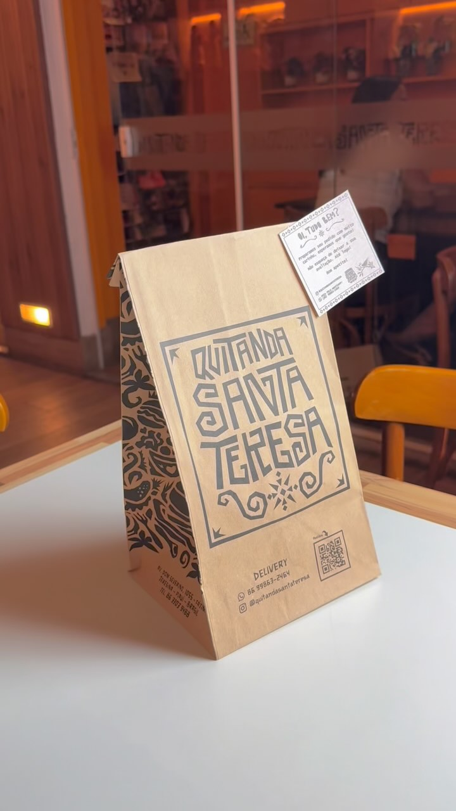

Cafés e lanches
Para acompanhar a conversa e dar sabor à sua pausa. Encontre suas opções no nosso cardápio.
Café, lanches e os sabores regionais que fazem parte dos nossos encontros. Puxe uma cadeira: tem lugar para a sua pausa na Quitanda Santa Teresa.

Um café com companhia, um lanche no meio do dia ou o pedido para aproveitar em casa. Escolha seu momento e conheça as nossas opções.
Quer aproveitar nossos sabores em casa? Consulte o atendimento pelo WhatsApp ou faça seu pedido pela plataforma que já usamos.
Combine disponibilidade e entrega com a nossa equipe.

Venha conhecer a Quitanda Santa Teresa, no bairro Fátima. Consulte os horários e escolha como quer aproveitar seu próximo café.